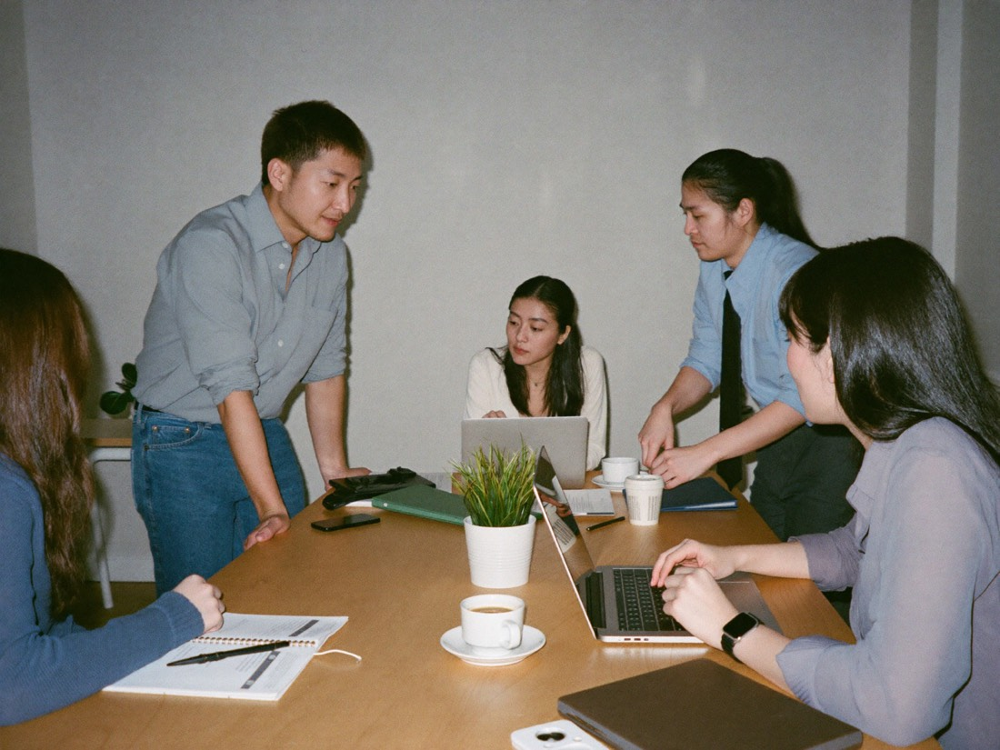

AIにはできない、
「人間力」を。
明日の朝、60分だけ。
磨きに来ませんか？
── 学んできたのに変わらなかった、
30〜50代の経営者へ
近くの会場と日程を、LINEでお送りします。
LINELINEで受け取るこんな「もやもや」、
ありませんか
ノウハウもテクニックも学んだ。なのに数字が動かない
セミナーに行っても、結局大きくは変わらなかった
同業の集まりは、いつも同じ話で終わる
今の努力の延長線上に、突破口が見えない
「やり方」は、
AIに置き換わっていく。
資料作成も、事務処理も、顧客対応も。
事業のかたちの見直しを迫られる
経営者が増えています。
ノウハウやテクニックの価値が
薄れていく時代に、
それでも残るものは何か。
置き換わるもの
- 資料作成
- 事務処理
- 顧客対応
残るもの
- 挨拶
- 礼儀
- 感謝
決してなくならない、
「信用資産」。
資格も、実績も、ノウハウも、
時代が変われば価値が変わる。
でも「この人なら任せられる」という信用は、
簡単には失われない資産になります。
- 先手の挨拶
- お辞儀
- 靴を揃える
- 約束を守る
- 感謝を伝える
- 人のせいにしない
この朝の場で学ぶのは、
そんな当たり前を徹底する
経営者の「あり方」。
日々の実践の積み重ねが、
周囲の信用に変わっていきます。
飛び込み営業のあと、ビルに向かって深くお辞儀をして帰る営業マン。その姿を偶然見ていた税理士から「あの人なら信用できる」と、仕事の紹介につながった──。この場には、そんな実例がいくつもあります。
「なんでいつもアイツばっかり」の、
『アイツ』になれる。
朝がいい理由は、
3つだけ
電話もSlackも、鳴らない
一日で唯一、誰にも邪魔されない時間。
頭が、いちばんクリア
判断力のピークを、自社のために使える。
出社前に、終わる
朝6時半から60分。仕事には食い込まない。
その朝、なにを
しているのか

週1回、朝の60分。
異業種の経営者が集まり、
経営と人生の原理原則──
人としての「あり方」を学び、
日常で実践する日本発の学びの場です。
何でもオンラインで済む時代に、
あえて集まり、直接顔を合わせる。
百戦錬磨の経営者との出会いが、
自分の基準を引き上げます。
手ぶらでOK。初回無料。
参加者の声
『部下が育たない原因は、相手ではなく私の関わり方にあるとわかりました』
『何年も集客に悩んでいたのに、異業種の社長の一言で見方が変わりました』
『会社の問題ばかり探していましたが、一番見直すべきは自分の経営姿勢でした』
まずは、LINEで。
あなたの近くの会場と、今週の開催日程
参加した経営者のリアルな話
はじめての朝の過ごし方（当日の流れ・服装・費用）

ノウハウは、
もう十分学んだ。
次は、「人間力」。